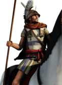
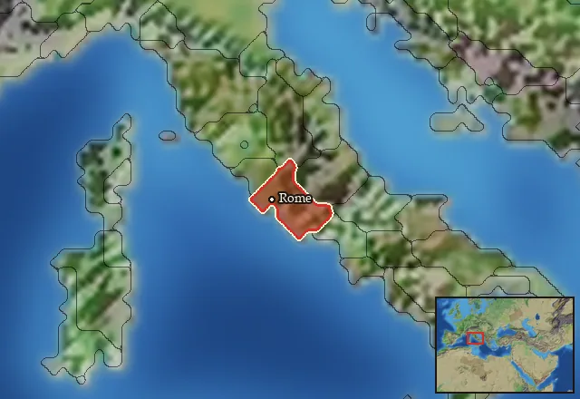

Latin Equites


Class: heavy · Category: cavalry · Men per unit: 30
Reforms: No longer recruitable after A New Man: Gaius Marius (switched off), Polybian Reform · Becomes a newer unit with Polybian Reform
Description
Called into service by their cities or allies, these men come from the nobility and aristocracy of the Latin states and colonies, raised from patrician families and wealthy landholders able to afford and maintain their own horses. Contrary to their Roman counterparts, who pay less attention to their cavalry, the Latin Equites are superior horsemen in every respect. While in older times, Latin cavalrymen would often dismount to fight on foot, these riders have adopted the heavier panoply of their Etruscan and Greek neighbours, trading some agility for the protection that proper armour and a shield afford in order to keep fighting in mounted melee. Armed with thrusting spears and carrying round cavalry shields, they can be relied upon in extended close-quarters combat. Their defensive equipment includes bronze helmets of Attic-Phrygian, Chalcidian, or Montefortino types, pair-matched greaves, as well as Etrusco-Latin scale cuirasses, scale-reinforced linen corselets (linothorakes), or bronze muscle cuirasses. This combination of heavy armour, lances, and shields allows them to withstand missile volleys, support the wings of a Latin or allied army, and charge straight into combat to defeat whatever enemy stands in their way.
Historical background
The equestrian class of Latium emerged during the Archaic period as an aristocratic class whose social prestige was intimately linked to horse ownership, wealth, and heroic martial display. Princely burials across Latium, such as those at Castel di Decima and the warrior tomb at Lanuvium, contain bronze horse bits, chariot fittings, and Greek-style armour, demonstrating that mounted warfare was the exclusive prerogative of the Latin and Etruscan aristocracy (Torelli, s.v. 'Archaic Rome between Latium and Etruria', The Cambridge Ancient History VII.2 (2006), pp. 34–37). Dated ca. 475 BC, when Lanuvium was an independent Latin city-state frequently warring with Rome, the Lanuvium warrior tomb contained the body of a military commander buried in a peperino sarcophagus with athletic equipment and a rich Greek-influenced panoply: a bronze anatomical muscle cuirass, a parade helmet of bronze, silver, gold, and glass paste, an axe, a machaira sword, and three spearheads (Colonna, 'Un aspetto oscuro del Lazio antico', in: PP 32 (1977), pp. 131–165; Torelli (2006), p. 37; Burns, The Cultural and Military Significance (2005), p. 86).
A defining characteristic of early Latin and Roman equestrian tactics was the practice of dismounting in battle to fight on foot as heavy infantry (Armstrong, 'Organized chaos’, in: idem and Fronda (eds.), Romans at War (2020), pp. 93–94; Armstrong and Notari, Early Roman Cavalry (2024), pp. 119, 137). Throughout the early Republic, aristocratic horsemen regularly dismounted to stabilize broken infantry lines, secure critical positions, or engage enemy leaders in single combat (Liv. 2.20.9 at Lake Regillus, 3.62.9, 4.38–39, 6.24.10, 7.33.9, 9.22.9; Oakley, 'Single Combat in the Roman Republic', in: CQ 35 (1985), pp. 393–396). At the outbreak of the Latin War in 340 BC, this shared martial culture was famously exemplified by the duel between the young Roman noble Titus Manlius and the Latin cavalry commander Geminus Maecius of Tusculum, who fought on horseback in front of their assembled armies. However, as the Romans continued this custom, the wealthier Latin states favoured a distinct heavy cavalry tradition influenced by Etruria and Magna Graecia (Liv. 8.7.1–12; Helm, 'Poor man's war – rich man's fight’, in: Armstrong and Fronda (eds.), Romans at War (2020), p. 102).
Following the Latin Settlement of 338 BC, Latin horsemen were integrated into the Roman military apparatus through the autonomous Latin colonies (Tan, 'The dilectus-tributum system’, in: Armstrong and Fronda (eds.), Romans at War (2020), pp. 58–61; Armstrong (2020), pp. 76–78, 93–94). Because the Roman citizen cavalry was small (traditionally numbering only 300 equites per legion), Rome relied disproportionately upon Latin and Italian allied horsemen, who were required to provide up to three times as many cavalrymen as the Roman citizen levy under the formula togatorum. We know that during the Gallic crisis of 225 BC (prior to the Battle of Telamon), the combined manpower of the Latins alone composed “eighty thousand foot and five thousand horse” (Polyb. 2.24.10, 6.26.7; Kent, 'The Italians in Roman Armies', in: Farney and Bradley (eds.), The Peoples of Ancient Italy (2017), pp. 254–268; Tan (2020), pp. 59–61; Helm (2020), p. 105).
Organized in independent squadrons (turmae) led by their own native decurions, Latin equites supported consular armies and fought on every major campaign from the Samnite Wars to the conquest of the Mediterranean (Tan (2020), pp. 60–61; Armstrong (2020), pp. 93–94). As Paul Erdkamp notes in his survey of allied contingents mentioned by Livy, Roman field armies regularly deployed different ethnic cavalry units of Latin, Lucanian, and Etruscan horsemen alongside allied infantry cohorts from colonies such as Firmum, Fregellae, Aesernia, Cremona, and Placentia. Latin turmae fought alongside Samnite and Central Italic allies even at the Battle of Pydna in 168 BC, were they performed very well: “The contingents of the Latin allies followed up the charge of the elephants and repulsed the (Macedonian) left wing” (Liv. 44.40.4–10; Erdkamp, 'Polybius and Livy on the Allies in the Roman Army', in: De Blois and Lo Cascio (eds.), The Impact of the Roman Army (2007), p. 48).
Stats
| Rank in roster | ||
|---|---|---|
| Men per unit | 30 | █········· 8% |
| Attack | 11 | ███······· 34% |
| Charge bonus | 25 | ████████·· 79% |
| Defence | 33 | █████····· 52% |
| · armour | 12 | ███████··· 70% |
| · defence skill | 18 | ████······ 39% |
| · shield | 3 | ████······ 37% |
| Morale | 12 | ██████···· 57% |
| Discipline | Normal | |
| Training | Trained | |
| Recruitment cost | 2,760 dn | ████████·· 78% |
| Upkeep per turn | 1,110 dn | █████████· 94% |
| Turns to recruit | 3 |
Weapons
| Primary | Secondary | Primary | Secondary | Primary | Secondary | Primary | Secondary | ||||
|---|---|---|---|---|---|---|---|---|---|---|---|
| Attack | 11 | 11 | Charge bonus | 25 | 21 | Type | melee · blade | melee · blade | Damage | piercing | piercing |
Defence
| Primary | Secondary | Primary | Secondary | Primary | Secondary | Primary | Secondary | ||||
|---|---|---|---|---|---|---|---|---|---|---|---|
| Total | 33 | — | Armour | 12 | — | Defence skill | 18 | — | Shield | 3 | — |
Condition and terrain
| Hit points | 1 | Ground: scrub / sand / forest / snow | -1 / -1 / -8 / -1 | Charge distance | 40 | Formations | Square · Wedge |
| Mount | heavy horse |
Technical stats
| Time between blows (primary / secondary) | 2.5 s / 2.5 s | Extra fatigue in hot climates | 3 | Spacing between men: close / loose | 2 × 4.8 m / 3 × 7.2 m | Default ranks | 5 |
In battle: Good stamina
Who can recruit it
No faction has this on its core roster: it can be raised only in the provinces below.
Any faction holding one of the provinces below can field it.
Exactly what a settlement must have, route by route (1)
| For | Building | Also requires | |||||||||
|---|---|---|---|---|---|---|---|---|---|---|---|
| Every faction | Any settlement | Tier 2 Military Industrial Complex · Latin area of recruitment · Dependency only · Tier 1 Colony not built · not Polybian Reform |
Areas of recruitment

| Zone | Provinces | ||||||
|---|---|---|---|---|---|---|---|
| Latin | 1 |